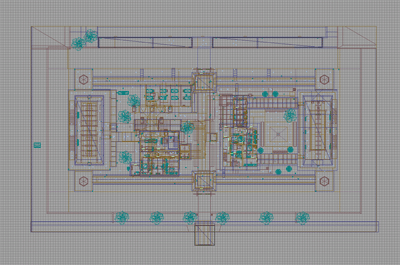
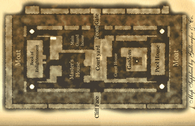
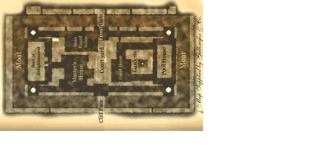
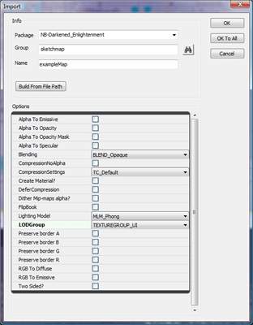
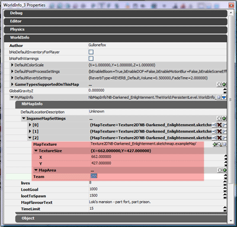
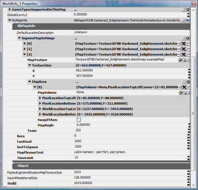
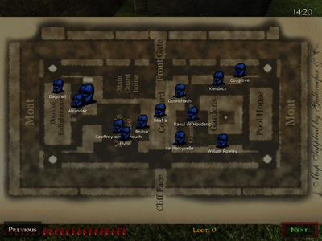

Getting a Sketch Map Ingame
Immortius :: May 20, 2008
A sketch map in Nightblade is a top down map which displays the location of players and other useful information. Nightblade has support for multiple pages of sketch maps, and multiple maps per map page. For instance: if your map has a four storey tower you can have a sketch of each storey of the tower on the one texture, and players will be displayed in the section of the tower they are in.
1. Generally, to start the sketch map you will want to take a screenshot of the map from the top-down perspective, to use as a guide when creating the sketch map. You may rotate the sketch map image relative to the level if you wish, but keep track of how much you rotate it and in which direction.


2. Now that you've finished your masterpiece you need to import it into the game. Firstly, the final image needs to have sides that are a power of 2 (i.e. 512, or 1024). You may need to extend the image size to get this to work - this is fine, just make sure you leave the actual map in the top-right corner.

Open up the UT3 Editor, then open the Generic browser and select "Import..." from the file menu. Specify your map's file name as the Package so that the sketch map will be stored within the map. Also set the LODGroup of the texture to TEXTUREGROUP_UI (if you forget to do this now you can edit the texture's properties later).

3. The settings for sketch maps are contained in the NbMapInfo section the World Properties. Within the NbMapInfo section is a property called IngameMapSettings. Add a new element to this for your sketchmap. Set the MapTexture property to your map's texture, and the TextureSize property to the size of your map within the texture (if you had to extend the texture size to reach dimensions that were a power of two, this is how you get rid of the excess). The Team property determines which team can see the map - 0 for Thieves, 1 for Guards and 255 for both.

Your sketch map will now display ingame when the map key is pressed.
-:-
Setting up a Sketch Map to Display Players
Immortius :: May 20, 2008
In the properties for the sketch map is a MapArea list. Each map area describes settings for a single map section on the sketch map - in this case I only have one, so I will add a single MapArea element. In the four storey tower example above I would define a MapArea for each storey.
The first property, MapVolume, allows you to specify a NbMapVolume that players have to be within to show on the map. This is useful for cases where you have different maps for different storeys and don't want players to appear who are on different storeys. MapVolume is optional however, and is not necessary if your map covers the entire level.
For the next four properties you need to select two prominent map features that are shared between your map area and the level. These features should be as far apart as possible and towards the top-left and bottom-right of the area in the level. Specify the pixel location of these points on the sketch map texture in the PixelLocationTopLeft and PixelLocationBottomRight properties, and the level coordinates in the WorldLocationTopLeft and WorldLocationBottomRight properties. Working out the pixel locations will depend on your image software, but the world locations can be discovered by hovering your mouse over the point in the Top-down viewport and reading the Mouse: (X, Y, Z) coordinates from the UT3 editor status bar down the bottom of the editor (ignoring the Z value).
The final two properties allow you to deal with the relative rotation of the sketch map compared to the world. If you map is not rotated or is rotated 180º, you don't need to change anything. If your map has been rotated 90º either direction simply check the SwapXYAxis option. If your map has been rotated at some other angle fill in the MapAngle, with a positive number if rotated anti-clockwise and a negative number if rotated clockwise.

The sketch map will now display the location of players.

-:-


{kind=link}
{kind=link}
{kind=link}
{kind=link}
{kind=link}
{kind=link}
{kind=link}